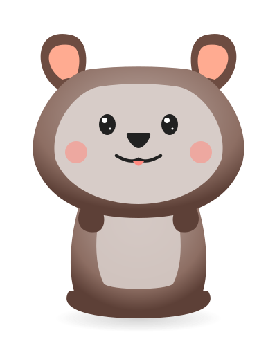

Quico — Rutina nocturna
Ritual diario para un sueño reparador
Plan
Toca un paso para quitarlo o volver a ponerlo
🔈 Sonido para dormir
▶️ Probar
▶️ Comenzar rutina
🌙 No me duermo
ℹ️ Ver información
⏸️ Pausar
⏭️
🏠 Volver al inicio
ℹ️ Información
← Volver
🌙 Beneficios de la rutina
🔈 Sonido y noches en vela